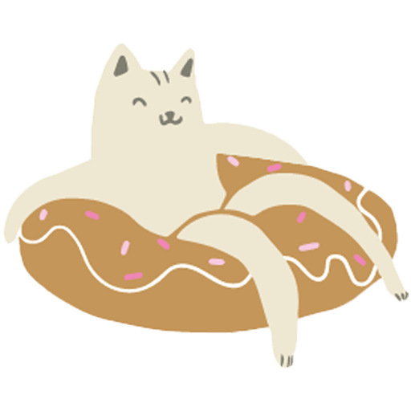
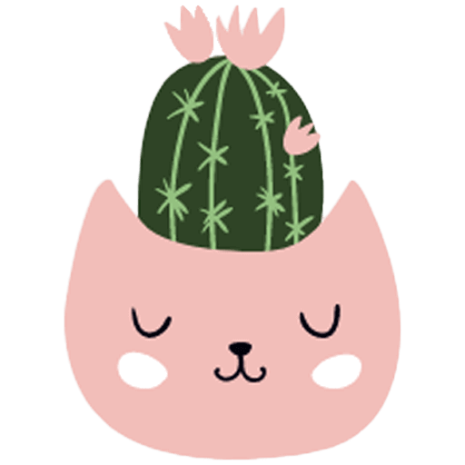

Bienvenue !
- Votre animal est difficile, en situation de surpoids ou à la recherche d'une alimentation plus saine ?
Prenez rendez-vous pour une visite à domicile ou par téléphone. - Prendre Rendez-vous
Les Services
-
chevron_rightPERTE DE POIDS
Les causes du surpoids sont nombreuses, il est important de déterminer la source du problème avec le propriétaire. Suivi personnel et régulier. Conseil à la perte de poids. Visite à domicile ou rendez-vous téléphonique.
-
chevron_rightREGIME B.A.R.F. & RATION MÉNAGÈRE
Envie de vous lancer dans le cru mais peur de mal faire ? Nous allons établir ensemble un planning équilibré pour votre animal.
-
chevron_rightALIMENTATION
Recherche d'une alimentation saine et adaptée à l'animal. Apprendre à se retrouver parmi le large choix sur le marché, déchiffrer les étiquettes souvent trompeuses.
- 
-
A propos
-
Au cours de mes études d'auxiliaire vétérinaire, la nutrition m'a particulièrement intéressée. En effet, l'alimentation a un impact sur chaque partie du corps, il est important de savoir ce que l'on donne à nos animaux. Notre mode de vie sédentaire s'est appliqué à nos compagnons, ce qui a eu de lourdes conséquences : 35% des chats et 30% des chiens souffrent de surpoids en France. Il est important de revoir nos habitudes afin de ne pas mettre leur santé en danger.
De plus, le marché de la pet food ne cesse de s'agrandir, ce qui peut embrouiller les propriétaires. Il y a tout et son contraire, difficile de ne pas se perdre ! Le plus important est d'écouter son animal et de faire en fonction de lui : ses besoins, ses goûts, son activité, etc. Voilà pourquoi un suivi personnalisé et une écoute du propriétaire sont primordiaux pour un conseil adapté. Nous allons apprendre ensemble à analyser une composition et faire les bons choix pour un futur sain.
Mais en dehors du surpoids et de l'obésité, peut être sentez-vous que votre animal aurait envie de varier son alimentation. Bio ? Sans céréales ? Viande crue ? L'être humain est en train de remettre en question son alimentation, il en va de même pour celle de son compagnon. Je souhaite aider les propriétaires à se retrouver parmi les gammes.
Le principal objectif est d'améliorer la qualité de vie de nos animaux. Votre compagnon est le plus chouchouté, le plus câliné, le plus aimé, je n'en doute pas. Mais son alimentation est-elle à la hauteur de tout l'amour que vous lui portez ?
Je fais mes visites à domicile afin de pouvoir observer l'animal dans son environnement habituel, son alimentation et pouvoir discuter avec le propriétaire afin de recueillir le plus d'informations. Suite à la demande, je fais désormais également des consultations par téléphone ou Skype.
Mon engagement : ne pas être en partenariat avec une quelconque marque de croquettes. Mes conseils sont personnalisés et ne sont pas sponsorisés. Contrairement à de nombreux professionnels de santé animale, je ne réalise pas de bénéfice sur la vente de produits.
Me
Conctacter
Sur rendez-vous
09:00 - 18:00
Mercredi, Jeudi et Samedi
- 
Visite à domicile
Paris Intra Muros
Charenton-le-Pont
Saint-Maurice
Maisons-Alfort
Vincennes
Ivry-sur-Seine
Levallois-Perret
Villejuif
...
Et partout en France, en Belgique et en Suisse grâce aux visioconférences